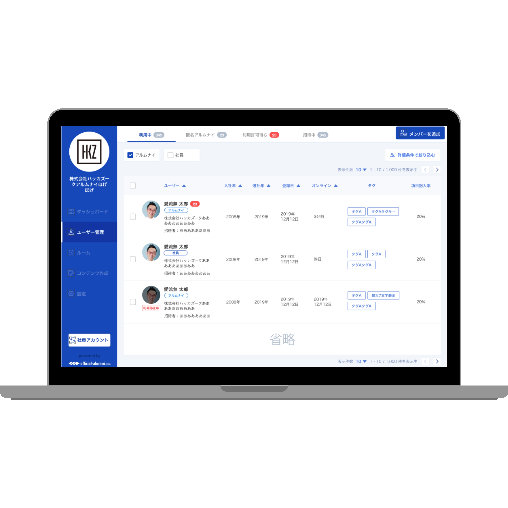
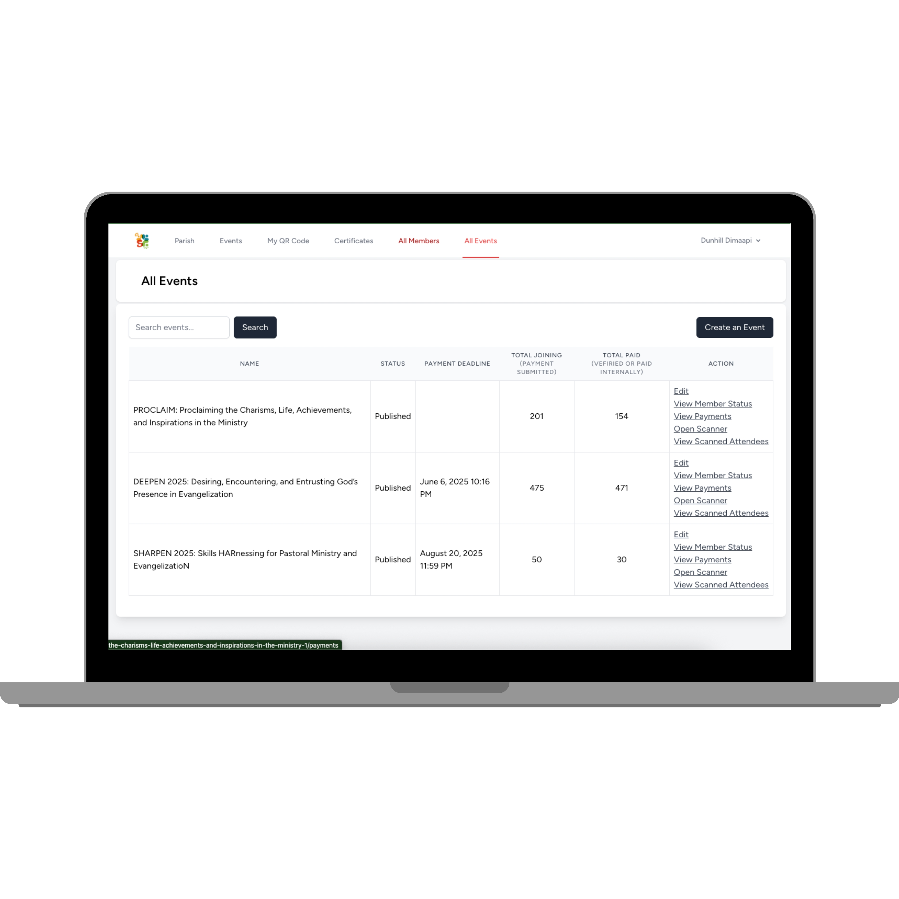
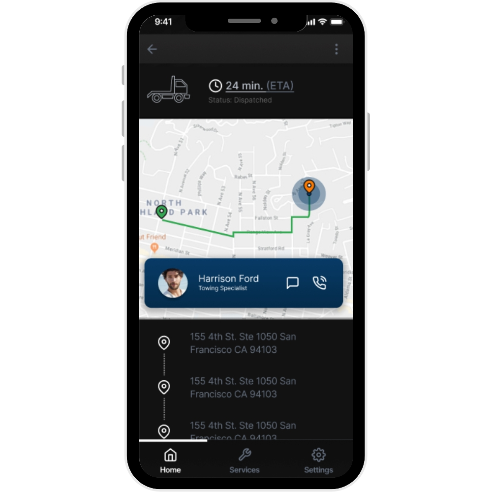
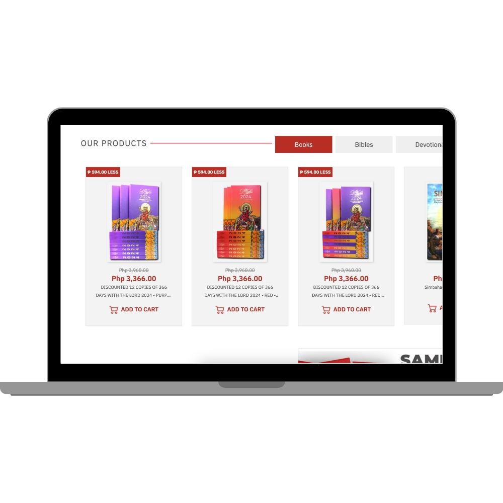

Official Alumni
A social platform connecting alumni communities through a reliable Laravel back end and AWS-based delivery pipeline.
Visit projectPlaridel, Bulacan · Building for teams worldwide
I’m Dunhill, a senior full-stack developer with 10+ years of experience delivering banking application features, web platforms, mobile applications, APIs, and cloud-supported products.
Selected work
From community platforms to mobile services, each project combines practical engineering with dependable delivery.

A social platform connecting alumni communities through a reliable Laravel back end and AWS-based delivery pipeline.
Visit project
A portal and event-management system that gives a community one place to publish, organize, and manage activities.
Visit project
A roadside-assistance mobile application using location services to help drivers request and coordinate support.
View project
An e-commerce and content-management experience with catalog, editorial, and payment workflows.
Visit projectExperience
My path started in PHP web development and grew into full-stack ownership, mobile applications, cloud delivery, mentoring, secure-development awareness, and customer-facing banking applications.
Request my résuméJan 11, 2026 — Present
H2 Software Consulting Services, Inc. · Deployed to Bank of Commerce, Inc.
Developing back-end capabilities for a new customer-facing online and mobile banking platform currently progressing through development, QA, and UAT.
Dec 2023 — Dec 2025
Hackazouk, Inc. (PH)
Built and maintained Laravel services and APIs, data models, tests, and AWS-hosted production workflows.
Apr 2023 — Jun 2025
Independent freelance work
Owned responsive web projects from client discovery and planning through implementation, deployment, and support.
Mar 2021 — Mar 2023
Creative Interlace Technologies OPC
Delivered React Native products and MERN services supported by AWS infrastructure and Google APIs.
Jun 2019 — Mar 2021
WebFocus Solutions, Inc.
Built CMS and commerce platforms, integrated payment gateways, and collaborated across development, QA, and client teams.
Apr 2016 — May 2019
Anydecide Holdings Corp.
Developed PHP websites, converted visual designs into responsive pages, integrated APIs, and improved existing systems.
Capabilities
I choose tools for the product and team—not for the logo wall.
Secure application logic, integrations, data access, banking workflows, content systems, and payment services.
Responsive interfaces for browsers and native mobile experiences built from real product designs.
Practical data design, production hosting, and cloud services that support dependable product delivery.
End-to-end ownership from discovery and code review through secure testing, deployment, mentoring, and support.
How I work
I balance delivery speed with security, maintainability, clear communication, and the responsibility to support what reaches production.
Take work from requirements and design through implementation, release, troubleshooting, and support.
Treat validation, access control, sensitive data, testing, and maintainability as part of the feature itself.
Use code reviews, mentoring, documentation, and clear conversations to improve shared engineering quality.
Use practical automation and AI-assisted tools responsibly while independently validating every result.
About
I work across code, product requirements, client conversations, deployment, and ongoing support—turning complex needs into software that is understandable and maintainable.
I’ve collaborated with Philippine, Japanese, and US teams in both in-house and freelance roles. My experience spans digital banking, commerce, content platforms, community products, mobile applications, payment integrations, and cloud operations.
Leadership beyond code
The same habits that strengthen an engineering team—clarity, accountability, mentoring, systems thinking, and calm execution—also shape how I serve my local community.
St. James the Apostle Parish · Plaridel, Bulacan
I lead the parish communications ministry as both a media operation and a formation community—building clear systems, developing volunteers, and helping the team communicate responsibly across parish platforms and events.
I translate the parish calendar and ministry goals into department plans, schedules, assignments, approval flows, equipment requirements, and backup plans.
I support recruitment, orientation, technical training, team building, reflection, and guided practice while helping department heads grow in ownership and decision-making.
I help maintain standards for livestreams, presentations, photography, video, social content, branding, factual accuracy, liturgical correctness, and responsible use of parish resources.
Selected milestone · May 2026
I guided the ministry beyond its usual media-support role to lead a major parish devotional initiative—coordinating people, responsibilities, resources, fundraising, and delivery through purposeful delegation and shared ownership.
Project archive
Additional web, mobile, content, and commerce projects from across my career.
Have a project or role in mind?
I’m available for full-time opportunities and selected freelance projects involving web platforms, APIs, mobile applications, or cloud deployment.
dunhilldimaapi@gmail.com